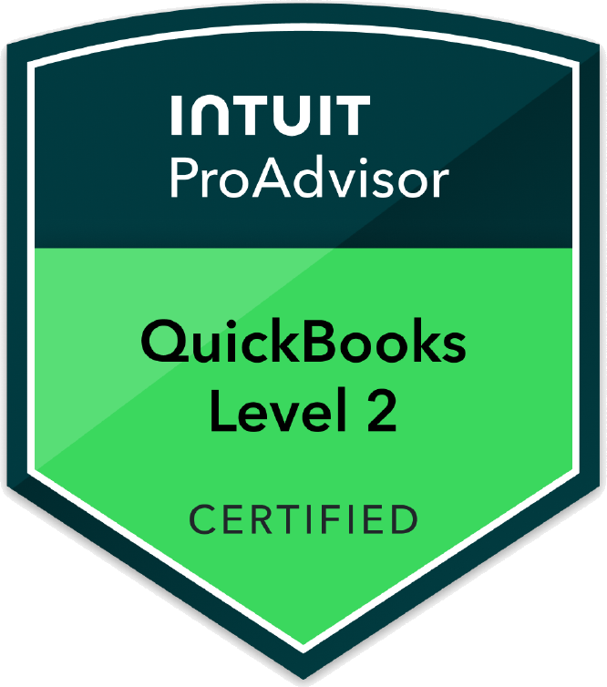

We specialize in bookkeeping and accounting for construction companies and small businesses across other industries. Our founder brings over 10 years of hands-on experience managing construction projects in the field, including estimating, procurement, and job cost tracking, so we understand contractor finances from the ground up. We also work with small businesses beyond construction, bringing that same job-level discipline to every client's books.
